Comparison with Observations of Nearby Galaxies (PHANGS)#
Introduction#
Here, we utilize the PHANGS data release to recompute the gas weight and reproduce Figure 4 of Sun et al. 2023.
Data Loading#
We use the hexagon aperture (1.5 kpc) from the PHANGS megatable v4.0 (Sun et al. 2022).
compute_prfm_inputs adds the derived columns Sigma_gas, Omega_d, H_star, and their uncertainties.
from pathlib import Path
import matplotlib.pyplot as plt
import numpy as np
from prfm import phangs
from prfm.phangs_plot import col_label, hist_plot, resolve_columns, scatter_plot
plt.rcParams["figure.dpi"] = 200
REPO_ROOT = Path("..")
DATA_DIR = REPO_ROOT / "data/phangs_megatable"
APERTURE = "hexagon"
tables = phangs.load_all(DATA_DIR, aperture=APERTURE)
t = phangs.vstack_tables(tables)
t = phangs.compute_prfm_inputs(t)
print(f"Aperture : {APERTURE}")
print(f"Galaxies : {len(tables)}")
print(f"Total rows: {len(t)}")
Aperture : hexagon
Galaxies : 80
Total rows: 46628
/Users/changgoo/miniconda3/envs/pyathena/lib/python3.12/site-packages/astropy/units/quantity.py:658: RuntimeWarning: invalid value encountered in divide
result = super().__array_ufunc__(function, method, *arrays, **kwargs)
mol = np.isfinite(np.asarray(t["Sigma_mol"], dtype=float))
atom = np.isfinite(np.asarray(t["Sigma_atom"], dtype=float))
both_valid = mol & atom
atom_only = ~mol & atom # atom valid, mol NaN → mol filled with 0
mol_only = mol & ~atom # mol valid, atom NaN → atom filled with 0
both_nan = ~mol & ~atom # both NaN → Sigma_gas = NaN
print(f"Total rows : {len(t)}")
print(f"Both valid : {both_valid.sum()}")
print(f"atom only (mol=0) : {atom_only.sum()}")
print(f"mol only (atom=0) : {mol_only.sum()}")
print(f"Both NaN (gas=NaN) : {both_nan.sum()}")
print(f"Sigma_gas valid (new) : {np.isfinite(np.asarray(t['Sigma_gas'], dtype=float)).sum()}")
Total rows : 46628
Both valid : 3888
atom only (mol=0) : 23247
mol only (atom=0) : 2318
Both NaN (gas=NaN) : 17175
Sigma_gas valid (new) : 29453
Correlation Matrix#
Scatter matrix for key gas and star-formation surface densities. Diagonal panels show the PDF of each quantity; off-diagonal panels show pairwise scatter plots with error bars where available.
# Fields to include (base name, log-scale flag)
_BASE = [
("Sigma_gas", True),
("Sigma_atom", True),
("Sigma_mol", True),
("Sigma_star", True),
("Sigma_SFR_HaW4recal", True),
("Sigma_SFR_FUVW4recal", True),
("Sigma_SFR_Hacorr", True),
("Omega_d", True),
("H_star", True),
]
# Resolve to actual column names present in this aperture's table
_spec = [(b, col_label(b), log) for b, log in _BASE]
COLS = resolve_columns(_spec, t, aperture=APERTURE) # [(col, label, log), ...]
col_names = [c for c, _, _ in COLS]
col_logs = {c: log for c, _, log in COLS}
n = len(col_names)
fig, axes = plt.subplots(n, n, figsize=(n * 2.2, n * 2.2))
for i, ci in enumerate(col_names):
for j, cj in enumerate(col_names):
ax = axes[i, j]
if i == j:
valid = np.isfinite(np.asarray(t[ci], dtype=float))
hist_plot(t, ci, ax=ax, log=col_logs[ci])
ax.set_ylabel("PDF")
else:
valid = (
np.isfinite(np.asarray(t[cj], dtype=float)) &
np.isfinite(np.asarray(t[ci], dtype=float))
)
scatter_plot(t, cj, ci, ax=ax,
log_x=col_logs[cj], log_y=col_logs[ci],
errorbars=True, s=2, bg_alpha=0.3)
if ci.startswith("Sigma_SFR") & cj.startswith("Sigma_SFR"):
# draw 1:1 line for SFR-SFR comparisons
sfr = np.logspace(-5, 0, 100)
ax.plot(sfr, sfr, color="black", linestyle="--", linewidth=1)
ax.annotate(f"N={valid.sum()}", xy=(0.97, 0.97), xycoords="axes fraction",
ha="right", va="top", fontsize="xx-small", color="0.4")
ax.tick_params(labelsize="x-small")
# Axis labels only on the outer edges
if i < n - 1:
ax.set_xlabel("")
ax.tick_params(labelbottom=False)
else:
ax.set_xlabel(col_label(cj))
if j > 0:
ax.set_ylabel("")
ax.tick_params(labelleft=False)
fig.suptitle(
f"PHANGS {APERTURE} aperture — correlation matrix ({len(t)} rows, {len(tables)} galaxies)",
fontsize="large", y=1.002,
)
fig.tight_layout(h_pad=0.3, w_pad=0.3)
plt.show()
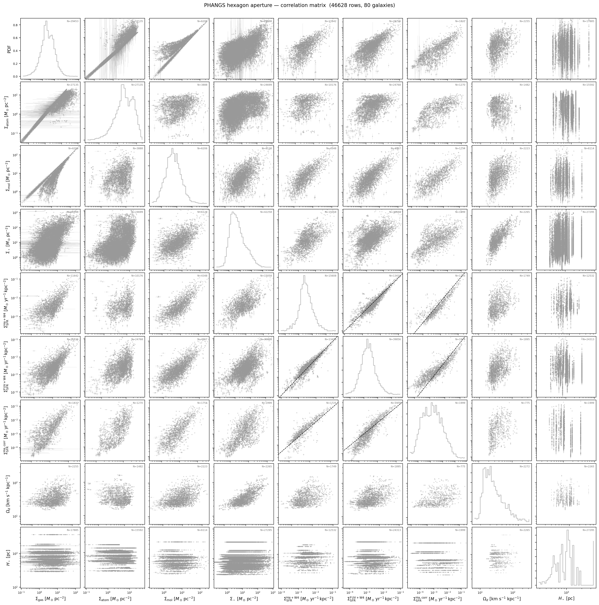
PRFM Predictions#
Apply the self-consistent PRFM solver to every valid row. The solver returns:
P_weight— dynamical equilibrium pressure \(P_\mathrm{DE}/k_B\) [K cm\(^{-3}\)]H_gas— self-consistent gas scale height [pc]sigma_eff_sol— self-consistent effective velocity dispersion [km s\(^{-1}\)]Sigma_SFR_pred— PRFM-predicted SFR surface density [\(M_\odot\) yr\(^{-1}\) kpc\(^{-2}\)]
import warnings
warnings.filterwarnings("ignore")
t_pred = phangs.run_prfm(t)
# Valid rows for original data
cols=["Sigma_gas","Sigma_atom","Sigma_mol","Sigma_star",
"Sigma_SFR_HaW4recal","Sigma_SFR_FUVW4recal","Sigma_SFR_Hacorr"]
for c_ in cols:
data_mask = phangs.valid_rows(
t_pred, cols=[c_]
)
print(f"Valid data rows for {c_}: {data_mask.sum()} / {len(t_pred)}")
data_mask = phangs.valid_rows(t_pred, cols=cols, rel_error=0.1)
print(f"Valid data rows for all: {data_mask.sum()} / {len(t_pred)}")
# Valid rows for PRFM output
prfm_mask = phangs.valid_rows(
t_pred, cols=["P_weight", "H_gas", "sigma_eff_sol", "Sigma_SFR_pred"], rel_error=0
)
t_clean = t_pred[prfm_mask]
print(f"Valid PRFM rows: {prfm_mask.sum()} / {len(t_pred)}")
1989 valid rows out of 46628
Valid data rows for Sigma_gas: 11507 / 46628
Valid data rows for Sigma_atom: 10986 / 46628
Valid data rows for Sigma_mol: 2680 / 46628
Valid data rows for Sigma_star: 16499 / 46628
Valid data rows for Sigma_SFR_HaW4recal: 1598 / 46628
Valid data rows for Sigma_SFR_FUVW4recal: 2932 / 46628
Valid data rows for Sigma_SFR_Hacorr: 1676 / 46628
Valid data rows for all: 364 / 46628
Valid PRFM rows: 1989 / 46628
Weight contributions vs \(P_\mathrm{DE}\)#
The fraction of the total mid-plane weight supplied by gas self-gravity (\(f_\mathrm{gas}\)), stellar gravity (\(f_\star\)), and dark matter (\(f_\mathrm{DM}\)) as a function of \(P_\mathrm{DE}\). Low-pressure (outer-disk) regions are DM-dominated; high-pressure (central) regions are stellar-dominated.
from prfm.phangs_plot import plot_weights
fig = plot_weights(t_clean)
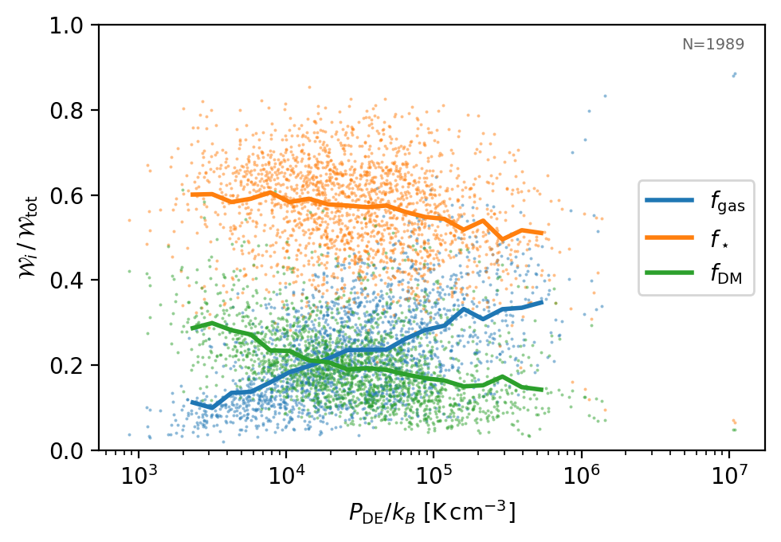
\(P_\mathrm{DE}\) vs surface densities#
\(P_\mathrm{DE}\) as a function of total gas and stellar surface density. Both are primary drivers of the mid-plane pressure, but the stellar term dominates at high \(\Sigma_\star\).
from prfm.phangs_plot import scatter_plot
from prfm.phangs import ac
fig, axes = plt.subplots(1, 2, figsize=(6, 3))
# reference line for gas-only self-gravity
plt.sca(axes[0])
Sigma_gas=np.logspace(0,3)
P_DE_gas=(np.pi*ac.G*(Sigma_gas*ac.M_sun/ac.pc**2)**2/2./ac.k_B).cgs
plt.plot(Sigma_gas, P_DE_gas, color="tab:orange", ls="--",
label=r"$P_\mathrm{DE} \propto \Sigma_\mathrm{gas}^2$")
scatter_plot(t_clean, "Sigma_gas", "P_weight", ax=axes[0], s=2, bg_alpha=0.12)
scatter_plot(t_clean, "Sigma_star", "P_weight", ax=axes[1], s=2, bg_alpha=0.12)
fig.suptitle(
r"$P_\mathrm{DE}$ vs surface densities — PHANGS hexagon aperture",
)
fig.tight_layout()
plt.show()
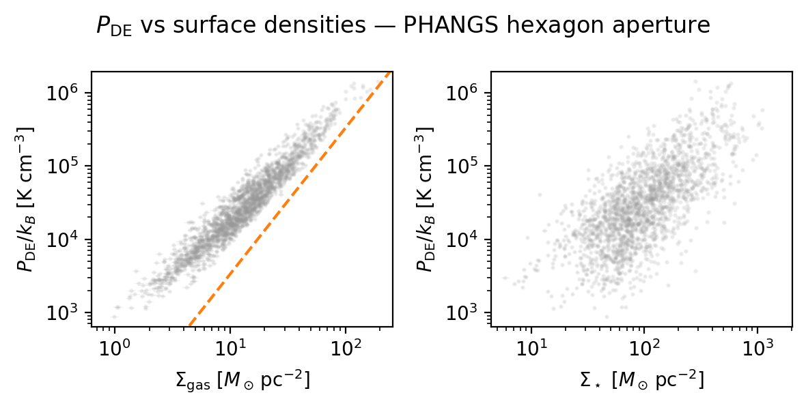
from prfm.phangs_plot import scatter_plot
from prfm.phangs import ac
fig, axes = plt.subplots(1, 4, figsize=(10, 3))
# reference line for gas-only self-gravity
plt.sca(axes[0])
Sigma_gas=np.logspace(0,3)
P_DE_gas=(np.pi*ac.G*(Sigma_gas*ac.M_sun/ac.pc**2)**2/2./ac.k_B).cgs
plt.plot(Sigma_gas, P_DE_gas, color="tab:orange", ls="--",
label=r"$P_\mathrm{DE} \propto \Sigma_\mathrm{gas}^2$")
for ax, y in zip(axes, ["P_weight", "H_gas", "sigma_eff_sol", "Sigma_SFR_pred"]):
scatter_plot(t_clean, "Sigma_gas", y, ax=ax, s=2, bg_alpha=0.12)
fig.suptitle(
r"All PRFM predictions vs surface densities — PHANGS hexagon aperture",
)
fig.tight_layout()
plt.show()
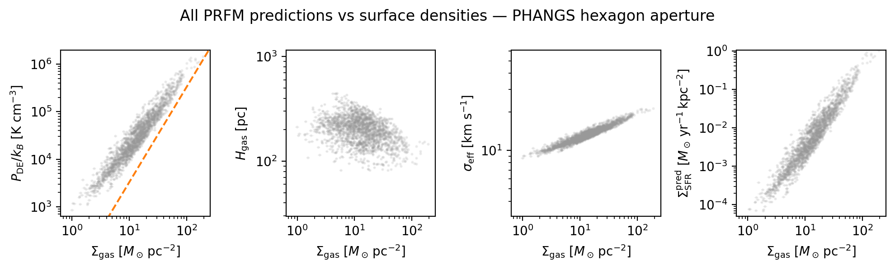
\(P_\mathrm{DE}\) vs \(\Sigma_\mathrm{SFR}\): comparison with simulations#
Each panel shows one SFR tracer (H\(\alpha\)+W4, FUV+W4, H\(\alpha_\mathrm{corr}\)) vs the PRFM-derived \(P_\mathrm{DE}\), overlaid on TIGRESS simulation points and the theoretical \(P\)–\(\Sigma_\mathrm{SFR}\) model lines.
import prfm.simulations as sims
sim_data = sims.load_sim_data()
SFR_TRACERS = [
("Sigma_SFR_HaW4recal", r"$\Sigma_\mathrm{SFR}^\mathrm{H\alpha+W4}$"),
("Sigma_SFR_FUVW4recal", r"$\Sigma_\mathrm{SFR}^\mathrm{FUV+W4}$"),
("Sigma_SFR_Hacorr", r"$\Sigma_\mathrm{SFR}^\mathrm{H\alpha,corr}$"),
]
fig, axes = plt.subplots(1, 3, figsize=(10, 3.5), sharex=True, sharey=True)
for ax, (sfr_col, sfr_label) in zip(axes, SFR_TRACERS):
plt.sca(ax)
# --- simulation points ---
for k in ["TIGRESS-classic", "TIGRESS-NCR"]:
sims.add_one_sim(sim_data[k], ms=2, log_x=False, log_y=False)
# --- PRFM model lines ---
sims.add_PSFR_ncr_model_lines(Wmin=2.5, Wmax=6.5, log_x=False, log_y=False)
# --- PHANGS data ---
valid = (
np.isfinite(np.asarray(t_clean["P_weight"], dtype=float)) &
np.isfinite(np.asarray(t_clean[sfr_col], dtype=float)) &
(np.asarray(t_clean["P_weight"], dtype=float) > 0) &
(np.asarray(t_clean[sfr_col], dtype=float) > 0)
)
scatter_plot(t_clean[valid], "P_weight", sfr_col, ax=ax,
errorbars=True, s=2, bg_alpha=0.5)
ax.tick_params(labelsize="small")
axes[0].legend(fontsize="x-small", markerscale=3, loc="lower right")
fig.suptitle(
r"$P_\mathrm{DE}$ vs $\Sigma_\mathrm{SFR}$"
f" — PHANGS {APERTURE} + TIGRESS-NCR simulations",
fontsize="large",
)
fig.tight_layout()
plt.show()
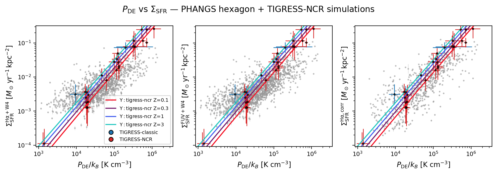
# Note: The above plot takes the megatable results at face value, without applying any additional quality cuts.
# Next step: vary Sigma_star and H_star stystematically to see how the PRFM predictions change, and whether the agreement with simulations improves.
Further Test I: if rotation curve information is not available#
import warnings
warnings.filterwarnings("ignore")
t_pred_nodm = phangs.run_prfm(t, variation={"Omega_d": None})
# Valid rows for PRFM output
prfm_mask = phangs.valid_rows(
t_pred_nodm, cols=["P_weight", "H_gas", "sigma_eff_sol", "Sigma_SFR_pred"]
)
t_clean_nodm = t_pred_nodm[prfm_mask]
print(f"Valid PRFM rows: {prfm_mask.sum()} / {len(t_pred_nodm)}")
1989 valid rows out of 46628
Applying variation: setting Omega_d to None
Valid PRFM rows: 1989 / 46628
fig, axes = plt.subplots(1,2, figsize=(8, 3.5))
fig = plot_weights(t_clean, ax=axes[0])
fig = plot_weights(t_clean_nodm, ax=axes[1], variation={"Omega_d": None})
plt.setp(axes,xlim=(1.e2, 1.e7))
Applying variation: setting Omega_d to None
[100.0, 10000000.0, 100.0, 10000000.0]
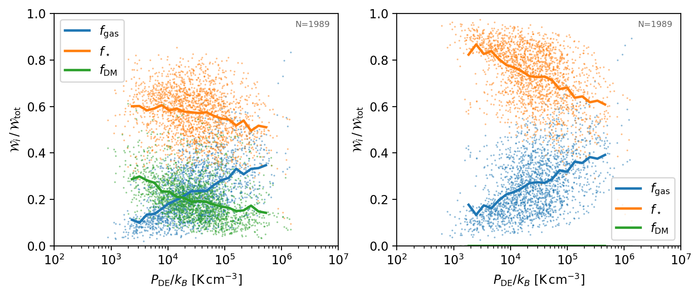
from prfm.phangs_plot import scatter_plot
from prfm.phangs import ac
fig, axes = plt.subplots(1, 2, figsize=(6, 3))
# reference line for gas-only self-gravity
plt.sca(axes[0])
Sigma_gas=np.logspace(0,3)
P_DE_gas=(np.pi*ac.G*(Sigma_gas*ac.M_sun/ac.pc**2)**2/2./ac.k_B).cgs
plt.plot(Sigma_gas, P_DE_gas, color="tab:orange", ls="--",
label=r"$P_\mathrm{DE,min} = \pi G\Sigma_\mathrm{gas}^2/2$")
plt.legend(fontsize="xx-small", loc="lower right", frameon=False)
plt.annotate(f"N={len(t_clean_nodm)}", xy=(0.70, 0.2), xycoords="axes fraction",
ha="left", va="top", fontsize="x-small", color="0.4")
plt.annotate(f"N={len(t_clean)}", xy=(0.7, 0.3), xycoords="axes fraction",
ha="left", va="top", fontsize="x-small", color="tab:orange")
scatter_plot(t_clean_nodm, "Sigma_gas", "P_weight", ax=axes[0], s=2, bg_alpha=0.12)
scatter_plot(t_clean, "Sigma_gas", "P_weight", ax=axes[0], s=2, bg_alpha=0.12, bg_color="tab:orange")
scatter_plot(t_clean_nodm, "Sigma_star", "P_weight", ax=axes[1], s=2, bg_alpha=0.12)
scatter_plot(t_clean, "Sigma_star", "P_weight", ax=axes[1], s=2, bg_alpha=0.12, bg_color="tab:orange")
fig.suptitle(
r"with and without $\Omega_d$ for the same sample",
)
fig.tight_layout()
plt.show()
print("relative L1 norm in P_weight (nodm vs full): ",
np.nanmean(np.abs(t_clean_nodm["P_weight"] / t_clean["P_weight"] - 1)))
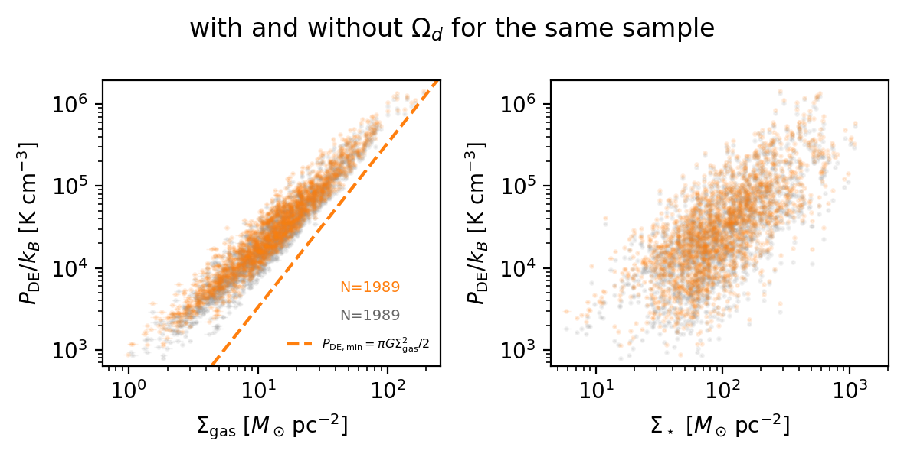
relative L1 norm in P_weight (nodm vs full): 0.14776024113665515
import prfm.simulations as sims
sim_data = sims.load_sim_data()
SFR_TRACERS = [
("Sigma_SFR_HaW4recal", r"$\Sigma_\mathrm{SFR}^\mathrm{H\alpha+W4}$"),
("Sigma_SFR_FUVW4recal", r"$\Sigma_\mathrm{SFR}^\mathrm{FUV+W4}$"),
("Sigma_SFR_Hacorr", r"$\Sigma_\mathrm{SFR}^\mathrm{H\alpha,corr}$"),
]
fig, axes = plt.subplots(1, 3, figsize=(10, 3.5), sharex=True, sharey=True)
for ax, (sfr_col, sfr_label) in zip(axes, SFR_TRACERS):
plt.sca(ax)
# --- simulation points ---
for k in ["TIGRESS-classic", "TIGRESS-NCR"]:
sims.add_one_sim(sim_data[k], ms=2, log_x=False, log_y=False)
# --- PRFM model lines ---
sims.add_PSFR_ncr_model_lines(Wmin=2.5, Wmax=6.5, log_x=False, log_y=False)
# --- PHANGS data ---
valid = phangs.valid_rows(t_clean_nodm, cols=["P_weight", sfr_col])
scatter_plot(t_clean_nodm[valid], "P_weight", sfr_col, ax=ax,
errorbars=True, s=2, bg_alpha=0.5)
plt.annotate(f"N={np.sum(valid)}", xy=(0.03, 0.95), xycoords="axes fraction",
ha="left", va="top", fontsize="x-small", color="0.4")
valid = phangs.valid_rows(t_clean, cols=["P_weight", sfr_col])
scatter_plot(t_clean[valid], "P_weight", sfr_col, ax=ax,
errorbars=True, s=2, bg_alpha=0.5, bg_color="tab:orange")
plt.annotate(f"N={np.sum(valid)}", xy=(0.03, 0.85), xycoords="axes fraction",
ha="left", va="top", fontsize="x-small", color="tab:orange")
ax.tick_params(labelsize="small")
axes[0].legend(fontsize="x-small", markerscale=3, loc="lower right")
fig.suptitle(
r"$P_\mathrm{DE}$ vs $\Sigma_\mathrm{SFR}$"
f" — PHANGS {APERTURE} + TIGRESS-NCR simulations",
fontsize="large",
)
fig.tight_layout()
plt.show()
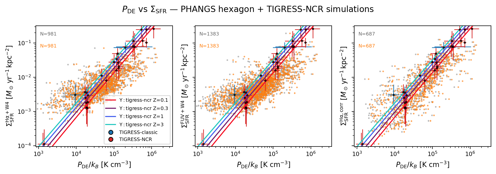
Further Test II: systematic variations of the measurements#
# systematic variation
import warnings
warnings.filterwarnings("ignore")
t_variation = []
variation = [None, {"Omega_d": None}, {"Sigma_star": 3}, {"Sigma_star": 0.3},
{"H_star": 3}, {"H_star": 0.3}]
for v in variation:
t_variation.append(phangs.run_prfm(t, variation=v))
# Valid rows for PRFM output
t_clean_variation = []
for t_var, v in zip(t_variation, variation):
prfm_mask = phangs.valid_rows(
t_var, cols=["P_weight", "H_gas", "sigma_eff_sol", "Sigma_SFR_pred"]
)
t_clean_variation.append(t_var[prfm_mask])
print(f"Valid PRFM rows: {prfm_mask.sum()} / {len(t_var)}")
1989 valid rows out of 46628
1989 valid rows out of 46628
Applying variation: setting Omega_d to None
1989 valid rows out of 46628
Applying variation: scaling Sigma_star by 3
1989 valid rows out of 46628
Applying variation: scaling Sigma_star by 0.3
1989 valid rows out of 46628
Applying variation: scaling H_star by 3
1989 valid rows out of 46628
Applying variation: scaling H_star by 0.3
Valid PRFM rows: 1989 / 46628
Valid PRFM rows: 1989 / 46628
Valid PRFM rows: 1989 / 46628
Valid PRFM rows: 1989 / 46628
Valid PRFM rows: 1989 / 46628
Valid PRFM rows: 1989 / 46628
fig, axes = plt.subplots(1,len(t_clean_variation),
figsize=(3*len(t_clean_variation), 3.5))
for t_clean_, v, ax in zip(t_clean_variation, variation, axes):
if v is None:
label = "default"
elif "Sigma_star" in v:
label = f"Sigma_star x {v['Sigma_star']}"
elif "H_star" in v:
label = f"H_star x {v['H_star']}"
elif v.get("Omega_d") is None:
label = "no Omega_d"
else:
label = str(v)
print(f"Variation: {label}, N={len(t_clean_)}")
plot_weights(t_clean_, ax=ax, variation=v)
ax.set_title(label)
plt.setp(axes,xlim=(1.e2, 1.e7))
Variation: default, N=1989
Variation: no Omega_d, N=1989
Applying variation: setting Omega_d to None
Variation: Sigma_star x 3, N=1989
Applying variation: scaling Sigma_star by 3
Variation: Sigma_star x 0.3, N=1989
Applying variation: scaling Sigma_star by 0.3
Variation: H_star x 3, N=1989
Applying variation: scaling H_star by 3
Variation: H_star x 0.3, N=1989
Applying variation: scaling H_star by 0.3
[100.0,
10000000.0,
100.0,
10000000.0,
100.0,
10000000.0,
100.0,
10000000.0,
100.0,
10000000.0,
100.0,
10000000.0]
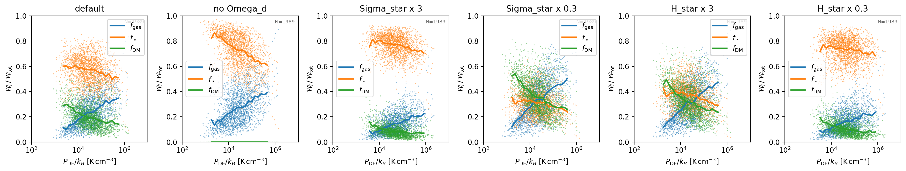
colors_list = plt.cm.tab10.colors
fig,ax = plt.subplots(figsize=(5, 3.5))
for t_clean_, v, c in zip(t_clean_variation, variation, colors_list):
if v is None:
label = "default"
elif "Sigma_star" in v:
label = f"Sigma_star x {v['Sigma_star']}"
elif "H_star" in v:
label = f"H_star x {v['H_star']}"
elif v.get("Omega_d") is None:
label = "no Omega_d"
else:
label = str(v)
print(f"Variation: {label}, N={len(t_clean_)}")
hist_plot(t_clean_, "P_weight", ax=ax, bg_color=c,)
Variation: default, N=1989
Variation: no Omega_d, N=1989
Variation: Sigma_star x 3, N=1989
Variation: Sigma_star x 0.3, N=1989
Variation: H_star x 3, N=1989
Variation: H_star x 0.3, N=1989
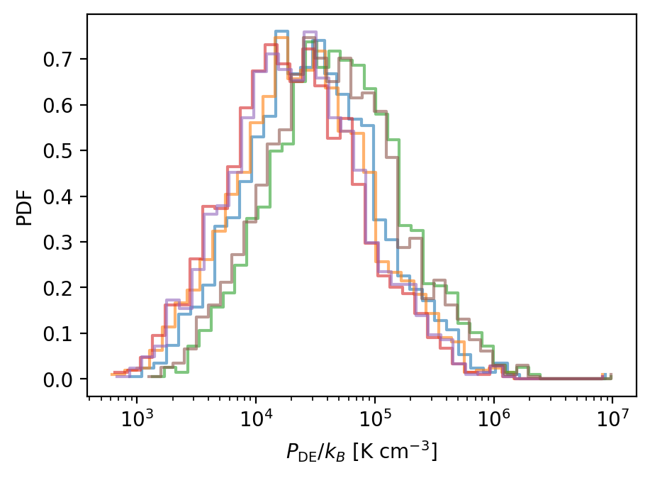
# assign erros based on the systematic variation, and see how large the error bars are on the P_weight vs Sigma_SFR relation
t_default = t_clean_variation[0]
sfr_error = []
P_error = []
for t_var in t_clean_variation:
sfr_error.append(t_var["Sigma_SFR_pred"] - t_default["Sigma_SFR_pred"])
P_error.append(t_var["P_weight"] - t_default["P_weight"])
sfr_error = np.array(sfr_error)
P_error = np.array(P_error)
sfr_error_std = np.std(sfr_error, axis=0)
sfr_error_hi = np.max(sfr_error, axis=0)
sfr_error_lo = np.min(sfr_error, axis=0)
P_error_std = np.std(P_error, axis=0)
P_error_hi = np.max(P_error, axis=0)
P_error_lo = np.min(P_error, axis=0)
t_default["e_Sigma_SFR_pred"] = sfr_error_std
t_default["e_P_weight"] = P_error_std
fig, axes = plt.subplots(1, 2, figsize=(10, 3.5), sharey=True)
plt.sca(axes[0])
plt.scatter(t_default["Sigma_SFR_pred"], sfr_error_std/t_default["Sigma_SFR_pred"],
s=2, alpha=0.5)
plt.scatter(t_default["Sigma_SFR_pred"], sfr_error_hi/t_default["Sigma_SFR_pred"],
s=2, alpha=0.5)
plt.scatter(t_default["Sigma_SFR_pred"], sfr_error_lo/t_default["Sigma_SFR_pred"],
s=2, alpha=0.5)
axes[0].set_xscale("log")
axes[0].set_xlabel(r"$\Sigma_\mathrm{SFR,pred}$")
axes[0].set_ylabel(r"std dev, high, low of $\delta\Sigma_\mathrm{SFR,pred}$")
plt.sca(axes[1])
plt.scatter(t_default["P_weight"], P_error_std/t_default["P_weight"],
s=2, alpha=0.5)
plt.scatter(t_default["P_weight"], P_error_hi/t_default["P_weight"],
s=2, alpha=0.5)
plt.scatter(t_default["P_weight"], P_error_lo/t_default["P_weight"],
s=2, alpha=0.5)
axes[1].set_xscale("log")
axes[1].set_xlabel(r"$P_\mathrm{DE}$")
axes[1].set_ylabel(r"std dev, high, low of $\delta P_\mathrm{DE}$")
fig.tight_layout()
plt.show()
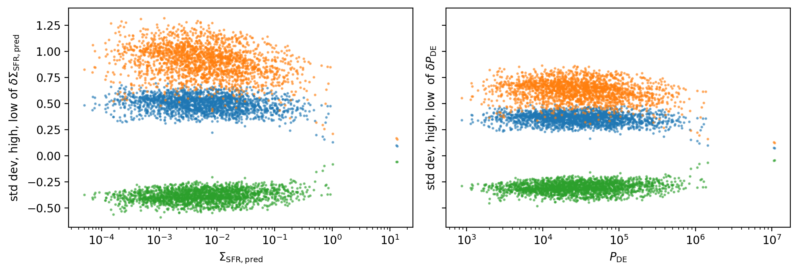
from matplotlib import colors
from prfm.phangs_plot import scatter_plot
from prfm.phangs import ac
fig, axes = plt.subplots(1, 2, figsize=(6, 3))
# reference line for gas-only self-gravity
plt.sca(axes[0])
Sigma_gas=np.logspace(0,3)
P_DE_gas=(np.pi*ac.G*(Sigma_gas*ac.M_sun/ac.pc**2)**2/2./ac.k_B).cgs
plt.plot(Sigma_gas, P_DE_gas, color="tab:orange", ls="--",
label=r"$P_\mathrm{DE,min} = \pi G\Sigma_\mathrm{gas}^2/2$")
plt.legend(fontsize="xx-small", loc="lower right", frameon=False)
for t_clean_, v, c in zip(t_clean_variation, variation, colors_list):
if v is None:
label = "default"
elif "Sigma_star" in v:
label = f"Sigma_star x {v['Sigma_star']}"
elif "H_star" in v:
label = f"H_star x {v['H_star']}"
elif v.get("Omega_d") is None:
label = "no Omega_d"
else:
label = str(v)
kw = dict(s=2, bg_color=c, bg_alpha=1 if v is None else 0.1)
scatter_plot(t_clean_, "Sigma_gas", "P_weight",
ax=axes[0], **kw)
scatter_plot(t_clean_, "Sigma_star", "P_weight",
ax=axes[1], **kw)
print(f"relative L1 norm in P_weight {label}: ",
np.nanmean(np.abs(t_clean_["P_weight"] / t_clean_variation[0]["P_weight"] - 1)))
axes[0].legend(fontsize="x-small")
fig.tight_layout()
plt.show()
relative L1 norm in P_weight default: 0.0
relative L1 norm in P_weight no Omega_d: 0.14776024113665515
relative L1 norm in P_weight Sigma_star x 3: 0.6232993668088267
relative L1 norm in P_weight Sigma_star x 0.3: 0.29663105482063273
relative L1 norm in P_weight H_star x 3: 0.24952193622337085
relative L1 norm in P_weight H_star x 0.3: 0.4638410404595003
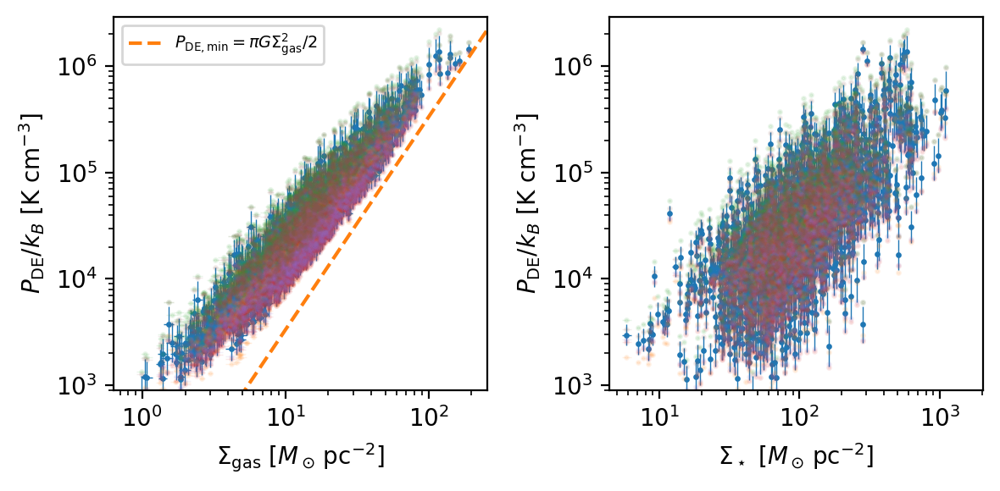
import prfm.simulations as sims
sim_data = sims.load_sim_data()
SFR_TRACERS = [
("Sigma_SFR_HaW4recal", r"$\Sigma_\mathrm{SFR}^\mathrm{H\alpha+W4}$"),
("Sigma_SFR_FUVW4recal", r"$\Sigma_\mathrm{SFR}^\mathrm{FUV+W4}$"),
("Sigma_SFR_Hacorr", r"$\Sigma_\mathrm{SFR}^\mathrm{H\alpha,corr}$"),
]
fig, axes = plt.subplots(1, 3, figsize=(10, 3.5), sharex=True, sharey=True)
for ax, (sfr_col, sfr_label) in zip(axes, SFR_TRACERS):
plt.sca(ax)
# --- simulation points ---
for k in ["TIGRESS-classic", "TIGRESS-NCR"]:
sims.add_one_sim(sim_data[k], ms=2, log_x=False, log_y=False)
# --- PRFM model lines ---
sims.add_PSFR_ncr_model_lines(Wmin=2.5, Wmax=6.5, log_x=False, log_y=False)
# --- PHANGS data ---
colors_list = plt.cm.tab10.colors
for t_clean_, v, c in zip(t_clean_variation, variation, colors_list):
if v is None:
label = "default"
elif "Sigma_star" in v:
label = f"Sigma_star x {v['Sigma_star']}"
elif "H_star" in v:
label = f"H_star x {v['H_star']}"
elif v.get("Omega_d") is None:
label = "no Omega_d"
else:
label = str(v)
valid = phangs.valid_rows(t_clean_, cols=["P_weight", sfr_col],rel_error=0)
scatter_plot(t_clean_[valid], "P_weight", sfr_col, ax=ax,
errorbars=True, s=2, bg_color=c, bg_alpha=1 if v is None else 0.1)
ax.tick_params(labelsize="small")
axes[0].legend(fontsize="x-small", markerscale=3, loc="lower right")
fig.suptitle(
r"$P_\mathrm{DE}$ vs $\Sigma_\mathrm{SFR}$"
f" — PHANGS {APERTURE} + TIGRESS-NCR simulations",
fontsize="large",
)
fig.tight_layout()
plt.show()
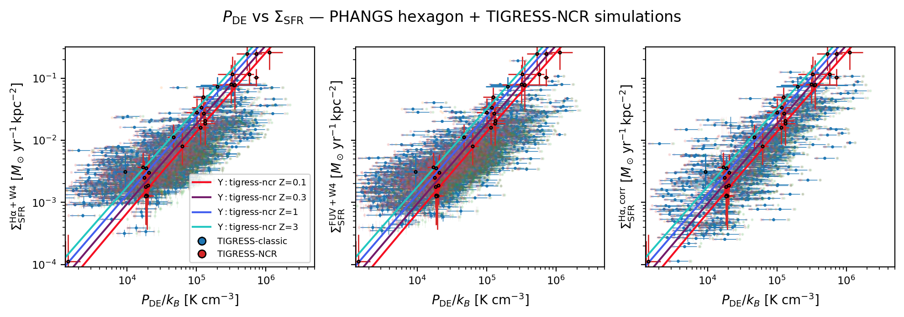
from tkinter import font
fig, axes = plt.subplots(1, 2, figsize=(8, 3.5), constrained_layout=True)
valid = phangs.valid_rows(t_default, cols=["P_weight", "Sigma_SFR_pred"],rel_error=0)
valid = phangs.valid_rows(t_default, cols=["P_weight", sfr_col],rel_error=0)
scatter_plot(t_default[valid], "P_weight", sfr_col, ax = axes[0],
errorbars=True, s=2, bg_color="tab:blue")
# --- PRFM model lines ---
plt.sca(axes[0])
sims.add_PSFR_ncr_model_lines(Wmin=2.5, Wmax=6.5, log_x=False, log_y=False)
plt.legend(fontsize="x-small", loc="lower right")
valid = phangs.valid_rows(t_default, cols=["Sigma_SFR_pred", sfr_col],rel_error=0)
scatter_plot(t_default[valid], "Sigma_SFR_pred", sfr_col, ax = axes[1],
errorbars=True, s=2, bg_color="tab:orange")
<Axes: xlabel='$\\Sigma_\\mathrm{SFR}^\\mathrm{pred}$ [$M_\\odot\\,\\mathrm{yr}^{-1}\\,\\mathrm{kpc}^{-2}$]', ylabel='$\\Sigma_\\mathrm{SFR}^\\mathrm{H\\alpha,corr}$ [$M_\\odot\\,\\mathrm{yr}^{-1}\\,\\mathrm{kpc}^{-2}$]'>
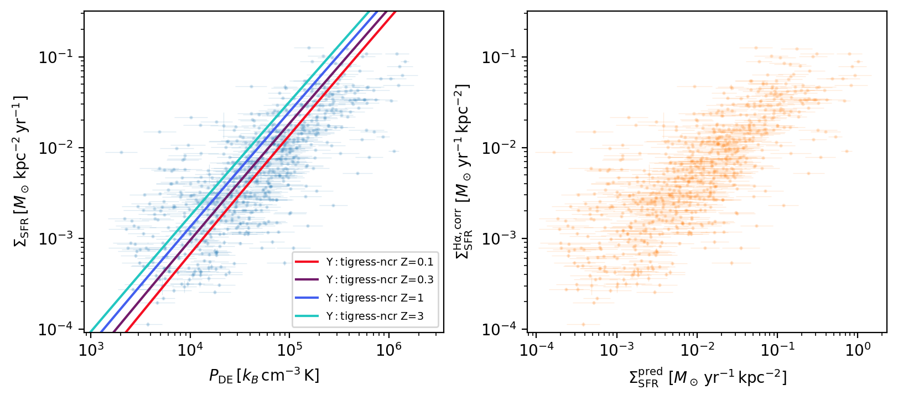